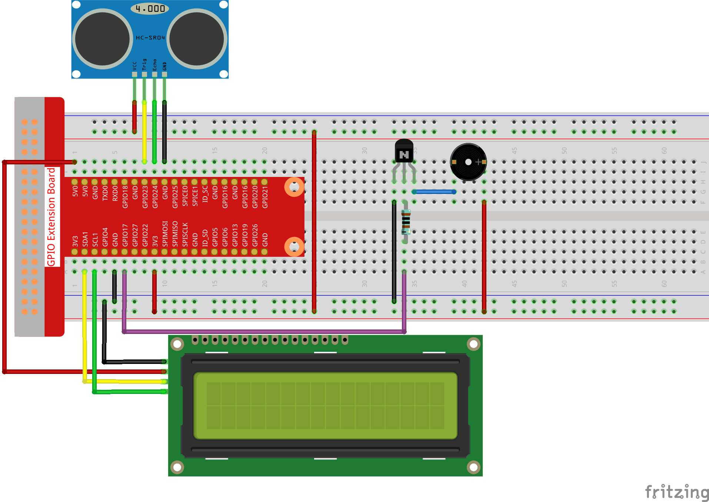

Note
Hello, welcome to the SunFounder Raspberry Pi & Arduino & ESP32 Enthusiasts Community on Facebook! Dive deeper into Raspberry Pi, Arduino, and ESP32 with fellow enthusiasts.
Why Join?
Expert Support: Solve post-sale issues and technical challenges with help from our community and team.
Learn & Share: Exchange tips and tutorials to enhance your skills.
Exclusive Previews: Get early access to new product announcements and sneak peeks.
Special Discounts: Enjoy exclusive discounts on our newest products.
Festive Promotions and Giveaways: Take part in giveaways and holiday promotions.
👉 Ready to explore and create with us? Click [here] and join today!
3.1.3 Reversing Alarm
Introduction
In this project, we will use LCD, buzzer and ultrasonic sensors to make a reverse assist system. We can put it on the remote control vehicle to simulate the actual process of reversing the car into the garage.
Components

Schematic Diagram
Ultrasonic sensor detects the distance between itself and the obstacle that will be displayed on the LCD in the form of code. At the same time, the ultrasonic sensor let the buzzer issue prompt sound of different frequency according to different distance value.
T-Board Name |
physical |
wiringPi |
BCM |
GPIO23 |
Pin 16 |
4 |
23 |
GPIO24 |
Pin 18 |
5 |
24 |
GPIO17 |
Pin 11 |
0 |
17 |
SDA1 |
Pin 3 |
||
SCL1 |
Pin 5 |

Experimental Procedures
Step 1: Build the circuit.
{kind=link}
For C Language Users
Step 2: Change directory.
cd ~/davinci-kit-for-raspberry-pi/c/3.1.3/
Step 3: Compile.
gcc 3.1.3_ReversingAlarm.c -lwiringPi
Step 4: Run.
sudo ./a.out
As the code runs, ultrasonic sensor module detects the distance to the obstacle and then displays the information about the distance on LCD1602; besides, buzzer emits warning tone whose frequency changes with the distance.
Note
If there is an error prompt
wiringPi.h: No such file or directory, please refer to Install and Check the WiringPi.If you get
Unable to open I2C device: No such file or directoryerror, you need to refer to I2C Configuration to enable I2C and check if the wiring is correct.If the code and wiring are fine, but the LCD still does not display content, you can turn the potentiometer on the back to increase the contrast.
Code
Note
The following codes are incomplete. If you want to check the complete codes,
you are suggested to use command nano 3.1.1_ReversingAlarm.c.
#include <wiringPi.h>
#include <stdio.h>
#include <sys/time.h>
#include <wiringPi.h>
#include <wiringPiI2C.h>
#include <string.h>
#define Trig 4
#define Echo 5
#define Buzzer 0
int LCDAddr = 0x27;
int BLEN = 1;
int fd;
//here is the function of LCD
void write_word(int data){...}
void send_command(int comm){...}
void send_data(int data){...}
void lcdInit(){...}
void clear(){...}
void write(int x, int y, char data[]){...}
//here is the function of Ultrasonic
void ultraInit(void){...}
float disMeasure(void){...}
//here is the main function
int main(void)
{
float dis;
char result[10];
if(wiringPiSetup() == -1){
printf("setup wiringPi failed !");
return 1;
}
pinMode(Buzzer,OUTPUT);
fd = wiringPiI2CSetup(LCDAddr);
lcdInit();
ultraInit();
clear();
write(0, 0, "Ultrasonic Starting");
write(1, 1, "By Sunfounder");
while(1){
dis = disMeasure();
printf("%.2f cm \n",dis);
delay(100);
digitalWrite(Buzzer,LOW);
if (dis > 400){
clear();
write(0, 0, "Error");
write(3, 1, "Out of range");
delay(500);
}
else
{
clear();
write(0, 0, "Distance is");
sprintf(result,"%.2f cm",dis);
write(5, 1, result);
if(dis>=50)
{delay(500);}
else if(dis<50 & dis>20) {
for(int i=0;i<2;i++){
digitalWrite(Buzzer,HIGH);
delay(50);
digitalWrite(Buzzer,LOW);
delay(200);
}
}
else if(dis<=20){
for(int i=0;i<5;i++){
digitalWrite(Buzzer,HIGH);
delay(50);
digitalWrite(Buzzer,LOW);
delay(50);
}
}
}
}
return 0;
}
Code Explanation
pinMode(Buzzer,OUTPUT);
fd = wiringPiI2CSetup(LCDAddr);
lcdInit();
ultraInit();
In this program, we apply previous components synthetically. Here we use buzzers, LCD and ultrasonic. We can initialize them the same way as we did before.
dis = disMeasure();
printf("%.2f cm \n",dis);
digitalWrite(Buzzer,LOW);
if (dis > 400){
write(0, 0, "Error");
write(3, 1, "Out of range");
}
else
{
write(0, 0, "Distance is");
sprintf(result,"%.2f cm",dis);
write(5, 1, result);
}
Here we get the value of the ultrasonic sensor and get the distance through calculation.
If the value of distance is greater than the range value to be detected, an error message is printed on the LCD. And if the distance value is within the range, the corresponding results will be output.
sprintf(result,"%.2f cm",dis);
Since the output mode of LCD only supports character type, and the variable dis stores the value of float type, we need to use sprintf(). The function converts the float type value to a character and stores it on the string variable result[]. %.2f means to keep two decimal places.
if(dis>=50)
{delay(500);}
else if(dis<50 & dis>20) {
for(int i=0;i<2;i++){
digitalWrite(Buzzer,HIGH);
delay(50);
digitalWrite(Buzzer,LOW);
delay(200);
}
}
else if(dis<=20){
for(int i=0;i<5;i++){
digitalWrite(Buzzer,HIGH);
delay(50);
digitalWrite(Buzzer,LOW);
delay(50);
}
}
This judgment condition is used to control the sound of the buzzer. According to the difference in distance, it can be divided into three cases, in which there will be different sound frequencies. Since the total value of delay is 500, all of the cases can provide a 500ms interval for the ultrasonic sensor.
For Python Language Users
Step 2: Change directory.
cd ~/davinci-kit-for-raspberry-pi/python/
Step 3: Run.
sudo python3 3.1.3_ReversingAlarm.py
As the code runs, ultrasonic sensor module detects the distance to the obstacle and then displays the information about the distance on LCD1602; besides, buzzer emits warning tone whose frequency changes with the distance.
Note
If you get the error
FileNotFoundError: [Errno 2] No such file or directory: '/dev/i2c-1', you need to refer to I2C Configuration to enable the I2C.If you get
ModuleNotFoundError: No module named 'smbus2'error, please runsudo pip3 install smbus2.If the error
OSError: [Errno 121] Remote I/Oappears, it means the module is miswired or the module is broken.If the code and wiring are fine, but the LCD still does not display content, you can turn the potentiometer on the back to increase the contrast.
Code
Note
You can Modify/Reset/Copy/Run/Stop the code below. But before that, you need to go to source code path like davinci-kit-for-raspberry-pi/python.
import LCD1602
import time
import RPi.GPIO as GPIO
TRIG = 16
ECHO = 18
BUZZER = 11
def lcdsetup():
LCD1602.init(0x27, 1) # init(slave address, background light)
LCD1602.clear()
LCD1602.write(0, 0, 'Ultrasonic Starting')
LCD1602.write(1, 1, 'By SunFounder')
time.sleep(2)
def setup():
GPIO.setmode(GPIO.BOARD)
GPIO.setup(TRIG, GPIO.OUT)
GPIO.setup(ECHO, GPIO.IN)
GPIO.setup(BUZZER, GPIO.OUT, initial=GPIO.LOW)
lcdsetup()
def distance():
GPIO.output(TRIG, 0)
time.sleep(0.000002)
GPIO.output(TRIG, 1)
time.sleep(0.00001)
GPIO.output(TRIG, 0)
while GPIO.input(ECHO) == 0:
a = 0
time1 = time.time()
while GPIO.input(ECHO) == 1:
a = 1
time2 = time.time()
during = time2 - time1
return during * 340 / 2 * 100
def destroy():
GPIO.output(BUZZER, GPIO.LOW)
GPIO.cleanup()
LCD1602.clear()
def loop():
while True:
dis = distance()
print (dis, 'cm')
print ('')
GPIO.output(BUZZER, GPIO.LOW)
if (dis > 400):
LCD1602.clear()
LCD1602.write(0, 0, 'Error')
LCD1602.write(3, 1, 'Out of range')
time.sleep(0.5)
else:
LCD1602.clear()
LCD1602.write(0, 0, 'Distance is')
LCD1602.write(5, 1, str(round(dis,2)) +' cm')
if(dis>=50):
time.sleep(0.5)
elif(dis<50 and dis>20):
for i in range(0,2,1):
GPIO.output(BUZZER, GPIO.HIGH)
time.sleep(0.05)
GPIO.output(BUZZER, GPIO.LOW)
time.sleep(0.2)
elif(dis<=20):
for i in range(0,5,1):
GPIO.output(BUZZER, GPIO.HIGH)
time.sleep(0.05)
GPIO.output(BUZZER, GPIO.LOW)
time.sleep(0.05)
if __name__ == "__main__":
setup()
try:
loop()
except KeyboardInterrupt:
destroy()
Code Explanation
def lcdsetup():
LCD1602.init(0x27, 1) # init(slave address, background light)
def setup():
GPIO.setmode(GPIO.BOARD)
GPIO.setup(TRIG, GPIO.OUT)
GPIO.setup(ECHO, GPIO.IN)
GPIO.setup(BUZZER, GPIO.OUT, initial=GPIO.LOW)
lcdsetup()
In this program, we apply the previously used components synthetically. Here we use buzzers, LCD and ultrasonic. We can initialize them in the same way as we did before.
dis = distance()
print (dis, 'cm')
print ('')
GPIO.output(BUZZER, GPIO.LOW)
if (dis > 400):
LCD1602.clear()
LCD1602.write(0, 0, 'Error')
LCD1602.write(3, 1, 'Out of range')
time.sleep(0.5)
else:
LCD1602.clear()
LCD1602.write(0, 0, 'Distance is')
LCD1602.write(5, 1, str(round(dis,2)) +' cm')
Here we get the values of the ultrasonic sensor and get the distance through calculation. If the value of distance is greater than the range of value to be detected, an error message is printed on the LCD. And if the distance is within the working range, the corresponding results will be output.
LCD1602.write(5, 1, str(round(dis,2)) +’ cm’)
Since the LCD output only supports character types, we need to use str () to convert numeric values to characters. We are going to round it to two decimal places.
if(dis>=50)
{delay(500);}
else if(dis<50 & dis>20) {
for(int i=0;i<2;i++){
digitalWrite(Buzzer,HIGH);
delay(50);
digitalWrite(Buzzer,LOW);
delay(200);
}
}
else if(dis<=20){
for(int i=0;i<5;i++){
digitalWrite(Buzzer,HIGH);
delay(50);
digitalWrite(Buzzer,LOW);
delay(50);
}
}
This judgment condition is used to control the sound of the buzzer. According to the difference in distance, it can be divided into three cases, in which there will be different sound frequencies. Since the total value of delay is 500, all of them can provide a 500ms interval for the ultrasonic sensor to work.
Phenomenon Picture